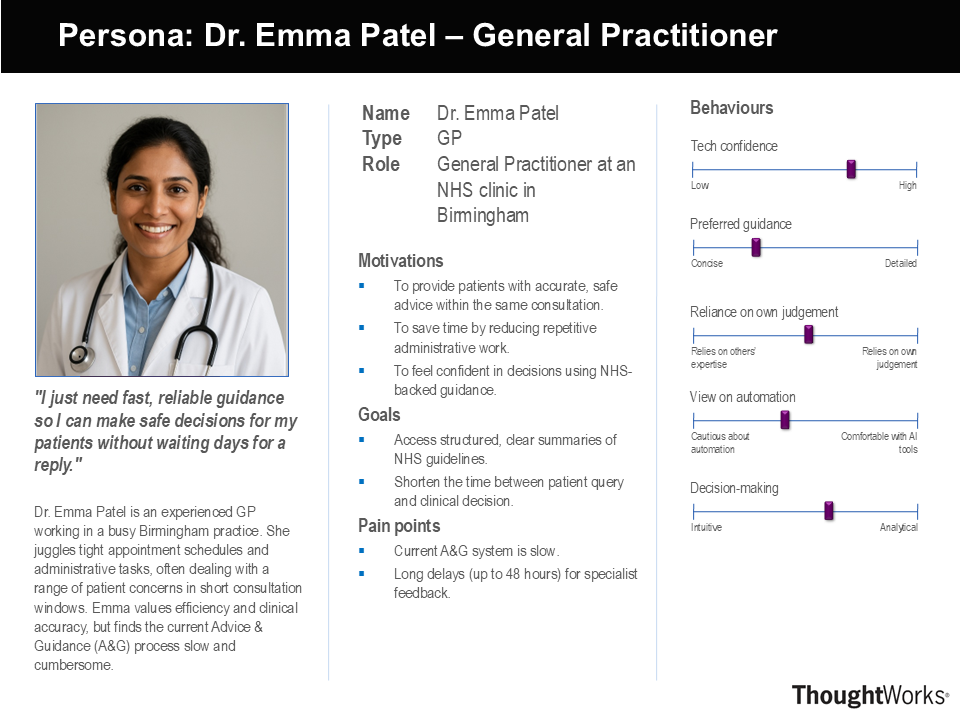
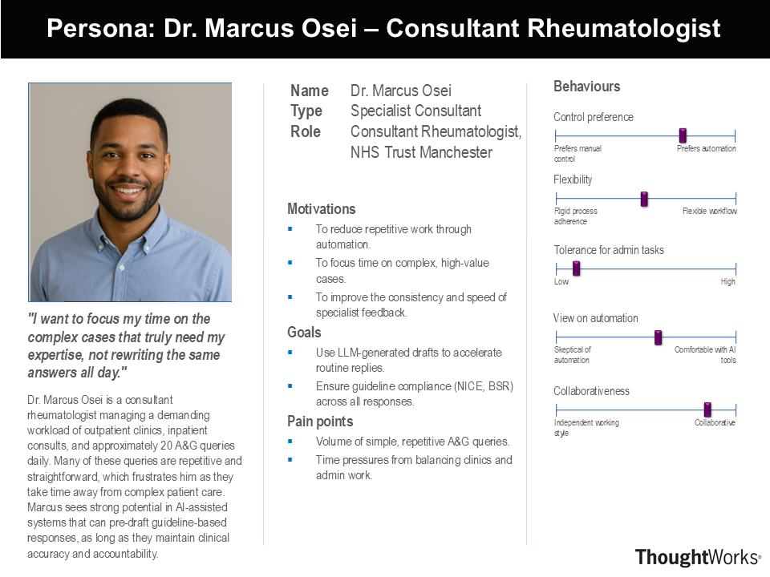
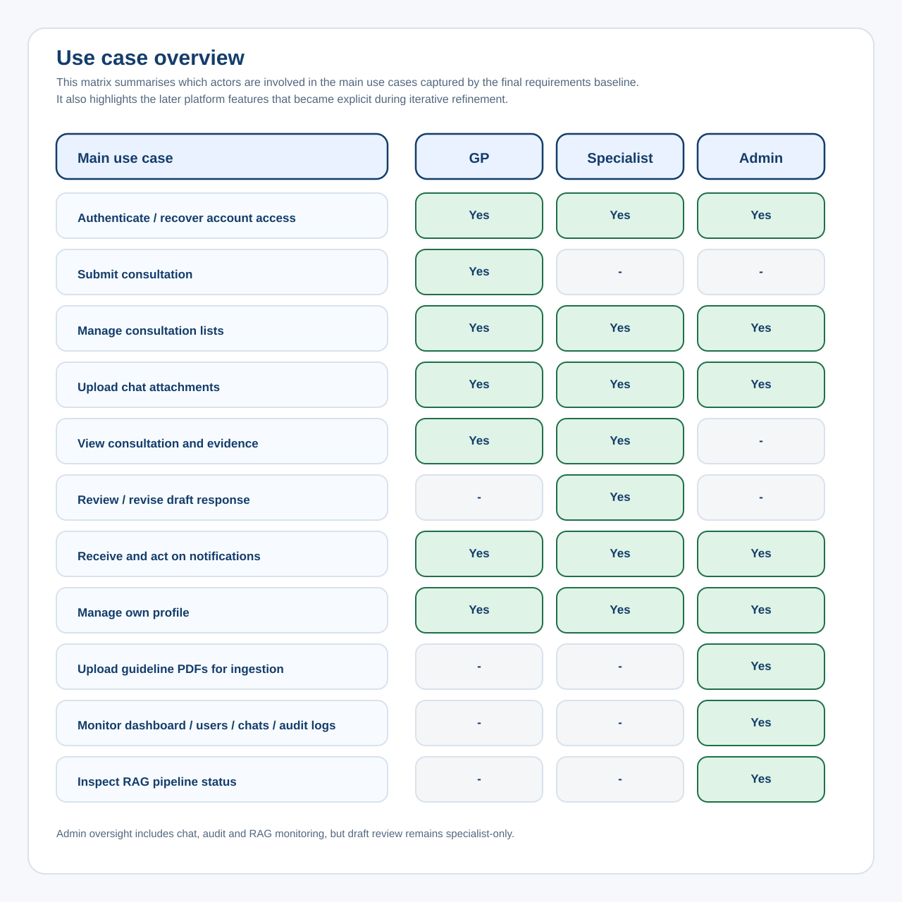
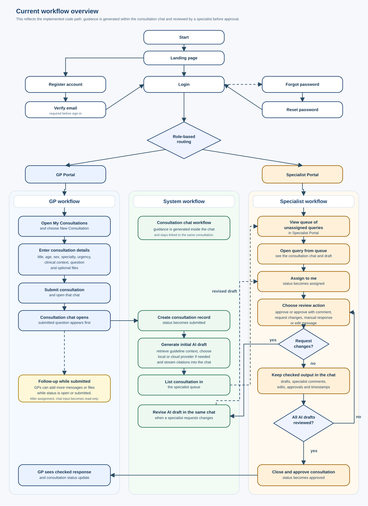

Intel
Intel hardware planning influenced early deployment objectives and performance constraints for local inference and infrastructure-aware system design.
Project Requirements and Analysis
Our project is supported by partners who shaped the system’s clinical direction, infrastructure decisions, and deployment context.
Intel hardware planning influenced early deployment objectives and performance constraints for local inference and infrastructure-aware system design.
NHS-facing workflow expectations informed core requirements around safe refusal, evidence visibility, and specialist escalation for uncertain outputs.
UCL supervision and systems-engineering guidance structured requirement prioritisation, delivery milestones, and evidence-based reporting standards.
GPs often need quick answers to routine Neurology and Rheumatology questions, yet relevant NICE and BSR guidance is spread across long documents. We also had to respect clinical safety: unsupported answers or missing citations were unacceptable, and some early retrievals lacked the right section granularity.
We built a retrieval-first workflow that prioritises guideline evidence, then generates structured responses with citations and an escalation path. We iterated chunking, retrieval thresholds, and response formatting based on review feedback to reduce ambiguity and improve confidence alignment.
The final requirements below reflect the baseline agreed after iterative refinement during the project. We gathered requirements through specialist interviews, stakeholder check-ins, and a short validation survey, then refined them as workflow, prototypes, and technical constraints became clearer.
We combined direct meetings with two client specialists (Rheumatology and Neurology), regular supervisor and partner checkpoints, and guideline-driven validation against NICE/BSR sources.
Yes. We designed a short survey with 7 items: five Likert-scale questions (trust, clarity, speed, citation usefulness, and escalation clarity) and two open-text questions for concerns and missing features.
We coded recurring themes from interview and survey feedback (speed, trust, safe fallback, transparency), then mapped these into MoSCoW priorities with explicit acceptance criteria.
Several requirements became explicit only after workflow walkthroughs, prototype reviews, and infrastructure constraints were validated. The table below captures the major changes that shaped the final baseline.
| Change driver | Earlier assumption | Revised requirement | Where reflected in final system |
|---|---|---|---|
| Infrastructure constraints changed | Core deployment could rely on the originally available Intel-backed environment. | Processing should remain local-first but support controlled cloud fallback when needed. | FR7, NFR2, NFR6 |
| Workflow simplification during development | A separate assistant-style route could exist alongside consultation review. | Final workflow should keep generation and specialist review in one consultation flow. | UC5, UC6 and current workflow diagram |
| Specialist feedback on safety and trust | Visible citations alone would make routine answers acceptable. | No response should be returned to the GP without specialist review, approval, or revision. | FR12, FR3, UC6 |
| NHS governance and traceability needs | Cited guidance alone would be sufficient for accountability. | System should preserve a complete paper trail of messages, reviews, approvals, and timestamps. | FR6, FR11 and interview traceability findings |
| Prototype and survey validation | A basic QA flow would be enough for first release. | Structured submissions, optional attachments, and notifications should be baseline features. | FR9, FR10, UC2, UC4, UC7 |
The interviews focused on real Advice & Guidance pain points and specialist workload. Each question maps directly to requirement decisions.
Support is most useful for routine but time-sensitive questions where the right guidance is buried in long documents. This informed the need for fast, concise answers with visible citations.
Trust depended on seeing where answers came from, how current guidance was, and whether a specialist review happened before return to the GP. This informed citation placement, source metadata, and review controls.
Specialists preferred refusal and review over speculation. This directly supported low-confidence fallback behavior within the specialist-reviewed workflow.
A useful first response depends on clear question framing, short context, relevant specialty, and optional supporting files. This supported structured consultation input with attachment capability.
NHS-facing workflows required a visible record of who asked, reviewed, edited, and approved each response, with timestamps and status changes. This informed consultation history and audit requirements.
Specialists wanted key guidance and citations to be easy to scan, with review status and next-step actions clearly visible. This informed usability and interface clarity requirements.
Q1 informed FR1, FR2, NFR1; Q2 informed FR2, FR5, FR12; Q3 informed FR3 and FR12; Q4 informed FR9; Q5 informed FR6 and FR11; Q6 informed FR10 and NFR4.
| Evidence ID | Evidence source | Collection method | Requirement impact |
|---|---|---|---|
| E1 | Client specialist meetings | Interview-led requirement gathering and follow-up checkpoints | Validated safe fallback, trust, and mandatory specialist review needs |
| E2 | Requirements scoping and acceptance-criteria workshops | Synthesis of agreed scope, risks, and delivery targets | Defined FR/NFR baseline, acceptance criteria, and prioritisation |
| E3 | Workflow, persona, and prototype reviews | Scenario walkthroughs and heuristic evaluation | Refined notification, attachment, transparency, and role-clarity requirements |
| E4 | Neurology and Rheumatology guideline review | Domain-scope validation and source curation | Constrained retrieval scope to verified guideline sources in target specialties |
| E5 | Deployment and infrastructure constraint review | Operational feasibility assessment | Informed local-first deployment, controlled fallback, and routing expectations |
| E6 | Validation survey (Likert + open text) | Post-prototype questionnaire and thematic coding | Refined wording, clarity, and escalation UX requirements |
The user roles below include summary persona cards plus the original HCI persona boards produced from interview and scenario analysis.
Needs rapid, trustworthy, citation-backed answers during consultations.
Needs review controls to revise or approve AI outputs with full evidence visibility.
Needs operational oversight, audit logs, and user-role governance.


The matrix and workflow visuals below capture role involvement and end-to-end process flow. Together with the detailed table they document the final consultation-based model.
This chart shows how GP, Specialist, and Admin roles map to the major use cases in the delivered platform.

The flowchart reflects the revised workflow where generation, review, and final approval remain linked in one consultation thread before any response is returned.

| ID | Use case | Actor | Outcome |
|---|---|---|---|
| UC1 | Authenticate / recover account access | Guest, GP, Specialist, Admin | Users sign in, recover credentials, and regain access to role-specific workflows. |
| UC2 | Submit consultation | GP | Structured clinical request is created for retrieval, generation, and review. |
| UC3 | Manage consultation lists | GP, Specialist, Admin | Search/filter/sort views support queue and case management. |
| UC4 | Upload chat attachments | GP, Specialist, Admin | Supporting files remain available throughout consultation review. |
| UC5 | View evidence-linked answer with citations | GP, Specialist | Users inspect grounded outputs with explicit source references. |
| UC6 | Review / revise draft response | Specialist | Specialist approves, requests changes, edits, or submits manual response before release. |
| UC7 | Receive and act on notifications | GP, Specialist, Admin | Users are alerted to assignments, responses, review changes, and events. |
| UC8 | Manage own profile | GP, Specialist, Admin | Users update profile and role-specific details securely. |
| UC9 | Upload guideline PDFs for ingestion | Admin | Guideline corpus can be updated for future retrieval runs. |
| UC10 | Monitor dashboard / users / chats / audit logs | Admin | Operational oversight supports governance and issue investigation. |
| UC11 | Inspect RAG pipeline status | Admin | Admin views indexing status, chunk counts, and ingestion health. |
| ID | Functional requirement | MoSCoW | Acceptance criteria | Evidence |
|---|---|---|---|---|
| FR1 | Retrieve relevant NICE/BSR sections per query | Must | For representative prompts, retrieved context maps to verified guideline passages. | E2, E4 |
| FR2 | Generate evidence-grounded draft answer with citation references | Must | Draft answers include source-linked citations and avoid clinically significant unsupported claims. | E2, E3 |
| FR3 | Low-confidence refusal with safe review fallback | Must | Below-threshold queries return safe refusal/limited output and remain in specialist workflow. | E1, E2 |
| FR12 | Require specialist approval before any response is returned to the GP | Must | No consultation response is marked complete until specialist approval, edit, or rejection. | E1, E2, E3 |
| FR4 | Authenticated, role-based access control for GP/specialist/admin workflows | Must | Authentication and role permissions are enforced across UI routes and API paths. | E1, E2, E3 |
| FR5 | Display source version/effective date metadata | Should | Citations include guideline title and version/effective-date metadata when available. | E2, E4 |
| FR6 | Consultation history and review audit trail | Should | Timelines record messages, specialist decisions, status changes, and timestamps. | E1, E3 |
| FR7 | Configurable provider routing for local-first inference | Could | System can retain local processing while invoking controlled cloud fallback when required. | E2, E5 |
| FR8 | Voice input for consultation queries | Won't | Voice input remains outside this release scope. | E2 |
| FR9 | Support structured consultation submission with optional file uploads | Should | GP users can submit specialty, context, and optional files for later review stages. | E1, E3 |
| FR10 | Provide notifications for assignment, review, and message events | Should | Users receive workflow notifications and can act on them from their role views. | E1, E3 |
| FR11 | Provide admin observability for users, consultations, logs, and dashboard metrics | Could | Admin users can access protected monitoring pages and audit-oriented summaries. | E2, E3, E5 |
| ID | Non-functional requirement | Category | MoSCoW | Acceptance criteria | Evidence |
|---|---|---|---|---|---|
| NFR1 | Interactive latency for routine GP interactions | Performance | Must | Representative tests show clinically usable draft-response latency and faster turnaround than manual lookup for routine cases. | E1, E2, E5 |
| NFR2 | Local-first processing and controlled data transfer | Security/Privacy | Must | Default processing remains local; cloud routing follows explicit governance controls. | E1, E2, E5 |
| NFR3 | Graceful fallback on retrieval/model failure | Reliability | Must | Failures return safe fallback messaging and preserve review workflow without crashing. | E1, E2, E5 |
| NFR4 | Readable, accessible interface for clinical workflows | Usability | Should | Core views maintain clear contrast, keyboard navigation, and role clarity. | E1, E3, E6 |
| NFR5 | Containerised deployment and modular codebase | Maintainability | Should | Main stack starts through documented container workflow with clear service boundaries. | E2, E5 |
| NFR6 | Provider-agnostic architecture for future evolution | Extensibility | Could | Routing and threshold configuration can change provider selection without redesigning workflows. | E2, E5 |
| NFR7 | Open-source release and full EHR integration | Scope | Won't | Both remain outside this coursework delivery scope. | E2 |
The delivered repository confirms that the implemented platform extends beyond core answer generation. Alongside grounded retrieval, citations, refusal handling, and specialist review before GP-facing output, the system includes authenticated account flows, consultation file attachments, notifications, hybrid local/cloud provider routing, and protected admin monitoring pages.
These capabilities remain part of the requirements baseline because they support governance, usability, and safe operation of the clinical workflow rather than speculative extras.
Admin workflows are required for governance and oversight. Authorised admins should inspect users, consultation and chat histories, audit logs, status changes, and timestamps so there is a clear operational paper trail across the platform.
A coursework project must show end-to-end engineering depth, so the system balances a real deployment shape with pragmatic shortcuts such as startup schema patching and an evolving RAG module layout.
Intel pivot note: Early planning assumed continuous access to an Intel-backed inference server. After access ended, requirements were updated to keep local-first processing while permitting controlled cloud fallback and provider switching based on query characteristics.